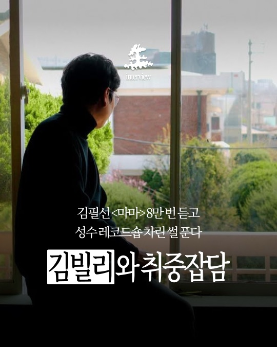

(3) · Saengmag · Interview / Press
아티스트 인터뷰와
페스티벌 취재
왜 인터뷰는 길고 무거워야 할까?
한 사람을 제대로 보여 주려면 긴 지면이 필요하다는 생각이 있습니다. 롱폼 인터뷰 〈취중잡담〉에서 숏폼 인터뷰 〈9문9답〉과 〈음악은 내 인생〉으로, 그리고 페스티벌 프레스 현장으로 이어진 인터뷰 작업을 모았습니다.
Situation들인 품과 돌아온 반응 사이
롱폼 인터뷰 〈취중잡담〉은 들인 품에 비해 반응이 따라오지 않았습니다.

Solution아홉 개의 질문, 그리고 현장
그래서 아홉 개의 질문으로 인물을 보여 주는 숏폼 인터뷰 〈9문9답〉을 직접 기획했습니다. 질문 한 장, 답 한 장을 번갈아 놓아 넘기는 리듬을 만들었습니다.
싱어송라이터 김뜻돌 편은 "올해 어떤 순간에도 변하지 않고 나를 지켜준 건?", "올해 나를 가장 설레게 했던 예측 불가능한 순간은?" 같은 질문으로 한 해를 돌아보게 했습니다.
김사월 편은 4월에 맞춰 "다가온 4월, 사월만의 봄맞이 루틴은?"처럼 계절을 담은 질문으로 꾸렸고, 마지막 장은 에디터가 쓴 짧은 글로 닫았습니다.
〈음악은 내 인생〉은 질문을 더 짧게 줄인 형식입니다. 활동 17년 차 색소포니스트 김오키에게 "나에게 음악이란?", "내가 음악을 하는 이유?", "음악에 가지는 증오와 애정의 비율은?"을 묻고, 답을 한 장에 한 줄씩 실었습니다.
최근에는 공개된 기록을 모아 편집자 관점에서 쓰는 인물 칼럼을 실험하고 있습니다.
페스티벌 프레스는 정기적으로 참여하는 프레스 현장을 릴스로 옮기는 작업입니다. RAPBEAT 2026과 매들리 메들리 2026 현장을 아이폰으로 촬영하고 프리미어로 편집했습니다.
- RAPBEAT 2026 · 나우아임영 · 2026.06.23 발행
- RAPBEAT 2026 · 박재범 · 2026.06.23 발행
- 매들리 메들리 2026 · 로얄44 · 영 블레시 · 2026.09.08 발행
Result가벼워진 형식, 넓어진 독자
형식을 줄이자 반응이 달라졌습니다. 롱폼 인터뷰 〈취중잡담〉 김빌리 편과 숏폼 인터뷰 〈9문9답〉 김뜻돌 편은 조회 수가 비슷했지만(3.2만 회, 4만 회), 김뜻돌 편의 저장은 2.6배(34회 → 90회), 공유는 4.1배(14회 → 58회)로 늘었습니다.
독자도 팔로워 밖으로 넓어졌습니다. 조회 가운데 팔로워가 아닌 사람의 비중은 〈취중잡담〉 김빌리 편 13.8%에서 〈9문9답〉 김뜻돌 편 24.9%, 김사월 편 38.6%, 〈음악은 내 인생〉 김오키 편 49%로 회차마다 높아졌습니다. 김오키 편은 반응의 78.9%가 팔로워가 아닌 사람에게서 나왔습니다.
페스티벌 프레스 릴스 가운데 매들리 메들리 2026 백스테이지에서 만난 로얄44·영 블레시 편은 조회 16.1만 회, 공유 3,091회를 기록했습니다. 평균 조회 시간은 11초로, 같은 시기 RAPBEAT 2026 릴스(4~5초)의 두 배를 넘었습니다.
숫자 밖의 성과도 있습니다. RAPBEAT, 매들리 메들리 등 페스티벌 프레스에 정기적으로 참여하며 주최사, 레이블과 원만한 협력 관계를 이어 가고 있습니다. 한 번의 취재로 끝나지 않고 행사마다 다시 이어지는 정기 협업 구조로 네트워크를 넓혀 가고 있습니다.
실패와 도전을 크게 나누지 않습니다. 숫자로 확인하고, 다음 콘텐츠에서 하나를 바꿉니다.